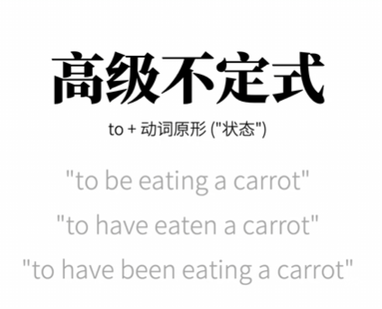
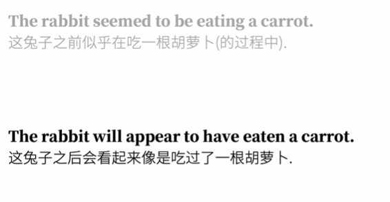

版权信息
warning
本文章为博主原创文章。遵循 CC 4.0 BY-SA 版权协议，转载请附上原文出处链接和本声明。
课程来自B站up英语兔——英语语法精讲合集 (全面, 通俗, 有趣 | 从零打造系统语法体系)，质量非常高的up，墙裂推荐。但博客也加入了我自己的理解
1. 什么是非谓语动词
谓语动词可以通过动词变位实现时态和语气、人称的表达，相对的，主语、时态和语气会限定谓语动词的变位，因此谓语动词也叫“限定性动词”。
而不受主语、时态等限制的“非限定性动词”，相对的，也失去了表达时态、人称的本领。“非限定性动词”也就是我们要讲的“非谓语动词”。”非谓语动词“可以作除谓语之外的其他句子成分。
总结非谓语动词：
- ❌ 没有时态变化
- ❌ 不随主语变化
- ❌ 不能单独作谓语
- ✅ 但仍然保留“动词意义”（比如带宾语）
非谓语动词一般有三类：
| 类型 | 形式 | 核心感觉 |
|---|---|---|
| 不定式 | to do | “将要 / 目的 / 抽象” |
| 动名词 | doing | “行为本身 / 名词化” |
| 分词 | doing / done | “状态 / 修饰” |
2. 为什么要有非谓语
因为 一句话只能有一个“核心谓语”。动词在句子中的最高级别就是谓语。最高级动词只能有一个。
如果你想表达多个动作，要么拆成多个句子，要么把多余动词“降级”，变成非谓语。
这也解释了为什么逗号不能连接独立的简单句，因为这使一个句子有多个核心谓语，如下是一个典型的错误例子：
I go to school， I see him， I talk to him.
3. 非谓语形式之一——不定式
”不定式“，顾名思义，就是”无法确定的形式“，光听这个名字就知道其用法也是非谓语中相对复杂的。
不定式的结构一般是：to + 动词原形。当然也有不加 to 的情况。在我看来，要理解不定式，一定不能忽略 to 这个介词。to 在英语中的画面感像是“一个箭头”，代表着方向、趋势、跨度、或到达某个目标。
当我们把这个“箭头”和动词原形结合，变成 to do 时，这个“箭头”的画面感依然存在。而 to do 则表达出一种“带有跨度感或指向性”的动作状态。
以上我称为 大箭头理论 😎。下面我们用大箭头理论对不定式的用法展开叙述。
3.1. 箭头连接时间的跨度
这是最常见的用法，可能占不定式的90%。主句动作和非谓语动作之间存在“时间差”，to 就是跨越这个时间差的桥梁。
例如：
I stopped to take a photo.
上过高中的人都知道，stop to do something，老师告诉我们这叫停下来去做某事，这样的用法叫做不定式表目的。
现在你明白了吧，为什么用 to do。stop 和 take a photo 之间是不是有一个时间差？有跨度，要用 to 来连接。
我们可以再来几个例子：
-
作宾语
I decided / to quit.
我现在“决定”，未来”退出“，跨度用 to 连接。下同理。
-
作宾语补语
The rabbit expected the wolf / to eat a carrot.
-
作定语
The rabbit has a lot of carrots / to eat.
-
作主语
To read all these books in one day / is impossible.
上面这句话我们换种说法更容易套用箭头理论，形式主语启动！
It is impossible / to read all these books in one day.
这里的“阅读”是一次具体的、指向未来的、有待完成的任务。
另外，我感觉，不定式一般都在句子的后面，因此用形式主语，形式宾语的不定式才是地道的表达。个人观点-_-。
看到这里，你是不是以为，非谓语动词的时间一定在谓语动词之后？那么请看这句话：
I’m sorry / to hear the bad news.
I am glad / to see you.
我是在之前”听到这个坏消息“ ，现在”产生了这个sorry的情绪“；我先”看到你“，然后产生了”glad的情绪“。因此，时间确实有跨度，但不一定是未来，只不过未来的情况占大多数。像这样的情绪性表语，不是未来，也用 to do。
3.2. 不带箭头的情况
理解了 to 代表着“跨度”和“距离”，我们就极易理解为什么在某些情况下，不定式会省略 to。
当主句谓语对动作的控制力极强、或者两个动作之间紧密相连、毫无距离感时，代表跨度的 to 就不被需要了。 动作直接、即刻发生。
这种“零距离感”主要体现在以下三个场景：
-
使役动词 如make, let, have。
使役动词表达的是一种强烈的、不可抗拒的因果关系，引发动作和动作发生之间没有讨价还价的余地，没有缓冲距离，所以不用
to。The boss made him work overtime.
-
毫无延迟的感官体验——感官动词 如see, hear, watch, notice。
当你亲眼看到、亲耳听到某件事发生时，你的感知和事件的发生是零延迟、同步的。所以，当你强调看到了动作的全过程时，不需要
to。I saw him cross the street.
-
情态动词与特定短语 如must, can, had better, would rather
情态动词本身不能单独作谓语，它们必须和动词原形紧密连接才能表达完整意思。因此不能用
to。You had better leave now.
I would rather stay home than go out.
3.3. 高级不定式
可以为不定式增加状态信息。但仍然不受时间限制。


这样的用法相对较少，所以就不展开了。
4. 非谓语形式之二——动名词
”动名词“，顾名思义，”动词转为名词“，因此动名词的意义就是将动词转化为名词来用，把一个动态的动作，像按了暂停键一样，变成了一个静态的“事件”。
当使用动名词时，给人的感觉就是——已发生、既定事实、抽象的概念。
来几个例子：
Smoking is bad for your health.
I enjoy reading.
前者是在说抽烟这件事、这个概念，后者是在说阅读是一个客观存在的爱好，而不是某一次具体的动作。
5. 辨析：动名词和不定式
动名词和不定式的使用往往是非谓语的难点，因为很多情况下，使用不定式和动名词在语法上都是正确的，只是侧重点不同。如果你只靠死记硬背“哪些词加 doing，哪些加 to do”，不仅痛苦，而且很容易在遇到新词时抓瞎。
那么我们结合前面所说的，可以分析出动名词和不定式的本质差异：
- 不定式是一个“箭头” ：它代表跨度、方向、具体的一次性动作。
- 动名词则代表既定事实、抽象的概念、或一整个动作过程。它把一个动作封装成了一个静态的“名词实体”。
我们可以辨析这两句话：
I like swimming.
这里的 swimming 是”游泳“这个概念。”我喜欢游泳这个活动“。
I like to swim.
这里的 swim 则是强调”游泳“这个具体的行为。
我们把他结合起来更能体现区别——
I like swimming, but I don’t like to swim in cold water.
下面来个练习题——
I like __ in the morning.
这里填swimming还是to swim?
答案是 to swim。这里肯定是强调具体行为，我喜欢在早上做游泳这个具体行为。如果填swimmimg，硬要说的话，表达的可能是 ”我喜欢 ’在晨光中畅游，水花溅起，整个世界都很安静的‘愉悦画面。”懂吧，那种概念性的，感性的那种东西。哎呀说不明白……只能靠自己体会了。
这也解释了为什么高中我们学的，like to do表达习惯，like doing表达爱好。
习惯嘛，就是你要在特定条件下要做的事，是具体的行为。爱好，不会分什么特定条件，就是爱好。你不能说，在早上我的爱好是游泳，但你可以说，在早上我的习惯是游泳。
明白了上面这些你可以试试再辨析一下下面这两句话，应该很简单——
Reading books is my hobby.
To read all these books in one day is impossible.
有些动词后面只能跟 to do，有些只能跟 doing。明白了上面说的，这也不难理解。
- 跟不定式的
| 动词类型 | 代表词汇 | 逻辑解释 |
|---|---|---|
| 意愿/企图 | want, hope, wish, expect | 具体的事+时间跨度 |
| 计划/决定 | plan, decide, agree, promise | 具体的事+时间跨度 |
| 拒绝/假装 | refuse, pretend | 具体的事。 |
- 跟动名词的
| 动词类型 | 代表词汇 | 逻辑解释 |
|---|---|---|
| 情感/体验 | enjoy, appreciate, mind | 享受、介意”这件事“的整体概念/过程。 |
| 结束/逃避 | finish, quit, avoid, escape | 你只能结束或避开一个已经存在或客观存在的动作实体。 |
| 考虑/建议 | consider, suggest, admit | 考虑或承认的是一个客观的“提案”或事实对象，而不是去执行。 |
-
两者皆可的
- Remember / Forget (记忆类)
- Stop
- Try
- Regret
-
remember/forget to do（箭头）： 脑子里有个备忘录，提醒自己“要去干嘛”。- Don’t forget to lock the door.（别忘了去锁门 —— 门现在还没锁）。
-
remember/forget doing（录像带）： 脑子里回放“干过的事”。- I forgot locking the door.（我忘了我锁过门 —— 门已经锁了，但我记忆断片了）。
-
stop to do（箭头）： 停下手里正在干的事，把箭头转向，去干另一件事。- He stopped to smoke.（他停下来，为了去抽根烟）。
-
stop doing（录像带）： 直接把手里这盘正在播放的录像带按停。- He stopped smoking.（他戒烟了 / 他停止了抽烟这个动作）。
-
try to do（箭头，有跨度/阻力）： 试图跨越障碍去达到目标，强调过程的艰难，翻译为“努力、企图”。- I tried to open the door, but it was locked.（我努力想打开，但打不开）。
-
try doing（照片，无阻力）： 动作本身没难度，只是把它当成一个现成的选项“试一试”看效果，翻译为“尝试（一种方法）”。- Try restarting your computer.（试着重启一下电脑 —— 重启没难度，重点是看能不能解决问题）。
-
regret to do（箭头）： 对接下来即将要做的事（通常是坏消息）感到遗憾。- I regret to inform you that you failed.（我很遗憾地通知你… —— 还没说，马上要说）。
-
regret doing（录像带）： 对已经发生过的“黑历史”感到后悔。- I regret quitting my job.（我后悔辞职了 —— 辞职已成事实）。
6. 非谓语形式之三——分词
分词 (Participle): doing (现在分词) / done (过去分词)
这种用法主要注重对状态的描绘，主要当成形容词或副词来用
它们表达的含义：
-
现在分词 (
doing)： 主动语态，且动作正在进行。 -
过去分词 (
done)： 被动语态，或动作已完成。
The crying baby needs milk.
主动，正在哭，作形容词
The broken window was repaired.
被打破的，已完成，作形容词
根据分词一个表主动一个表被动，我们就能很清楚的辨析以下句子（非谓语作表语）
He is fightened.
He is fightening.
fightened 表达被动，说明是他被吓到了，翻译为“他很害怕”
fightening 表达主动，说明他是主动“吓”别人，翻译为“他令人感到害怕”
还有很多动词转行形容词的例子，例如 encourage、excit、interest，都可以这么理解，而不用死记硬背，什么“令人……的”“……的”
7. 辨析：动名词和现在分词
动名词是“名词”，现在分词是“形容词/副词”，主要还是靠逻辑判断。其实也没必要判断，自己知道表达的是什么意思就行了。
-
sleeping bag ： bag 不能主动去 sleep，这里的 sleeping 是动名词，表示 bag 的“用途”（a bag for sleeping）。
-
sleeping baby： baby 正在主动 sleep，这里的 sleeping 是现在分词，表示 baby 的“状态”（a baby who is sleeping）。
8. 独立主格
当从句的主语和主句的主语不一致，但我们又不想用连词（如 because, when, if）去写一个繁杂的完整从句时，我们就可以保留那个不同的主语，然后把它后面的谓语动词“降级”成非谓语。
“独立” 因为它有自己的逻辑主语，结构上独立于主句。
“主格” 因为充当逻辑主语的名词或代词，一般保持主格形式形式（比如用 he 而不用 him，但在现代英语中大多直接用名词）。
它是英语为了追求语言的简化和高级感而创造的结构。多用于书面语，能用最少的词表达时间、原因、条件或伴随状态。
Because the rain stopped, we went out for a walk.
The rain having stopped, we went out for a walk.
用独立主格的判断标准： 两个动作的主动者是否一致
Entering the room, the teacher looked at the students.
进门的是老师，看的也是老师。直接用现在分词 Entering 即可，不需要加逻辑主语。
Entering the room, the students stopped talking.
进门的是老师，停止讲话的是学生。必须把“The teacher”这个独立的主语加上去，这就是独立主格。
The teacher entering the room, the students stopped talking.
再来一些独立主格的例子：
Here are two tasks, one to be finished today, the other to be finished tomorrow.
The problem solved, they felt much better.
8.1. 表伴随
当非谓语动词是 being 时，英语习惯直接把 being 省略掉，只留下表语部分，用来生动地描绘一种伴随的静态画面。
The boy sat there, his head
beingdown.
He entered the room, book in hand.
8.2. 与 with 搭配
如果在独立主格的前面加上一个介词 with，它就变成了口语和日常写作中最常用的“With 复合结构”。它的语法功能和独立主格完全一样，主要用来表示伴随状态。
She fell asleep with the TV playing.
Don’t speak with your mouthbeingfull of food / stuffed.
With so much work to do, I can’t go to the movie.